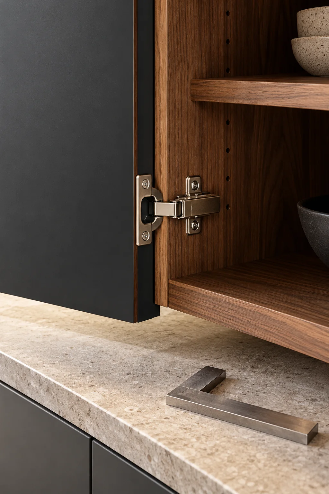
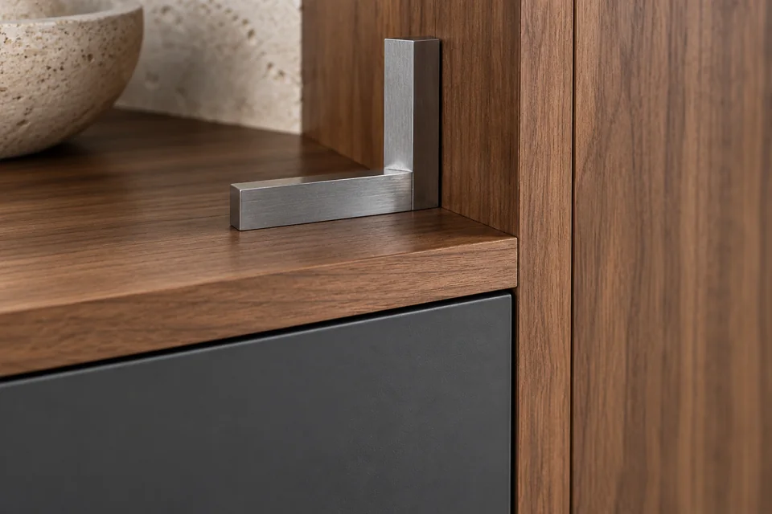
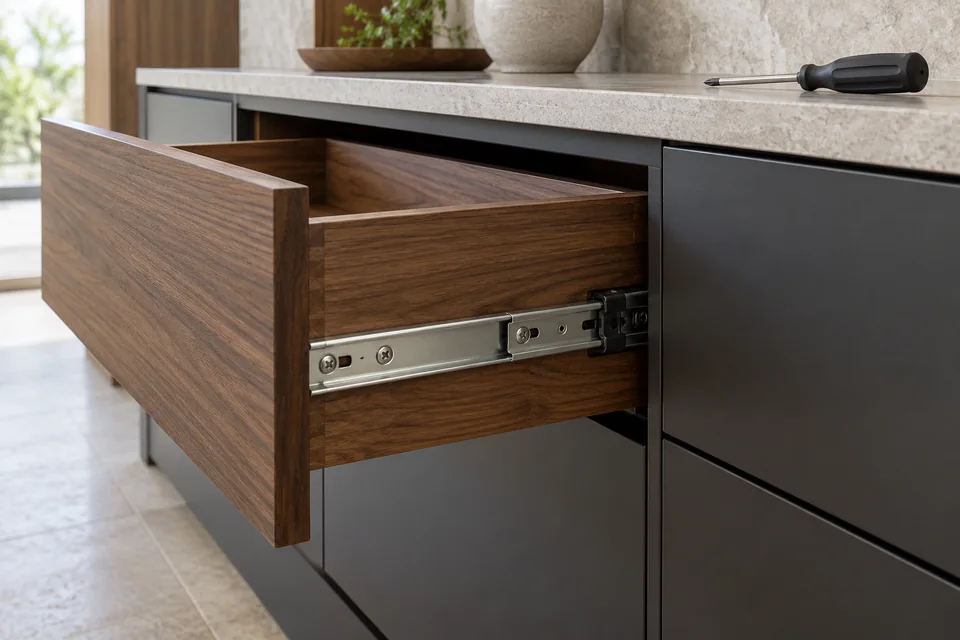
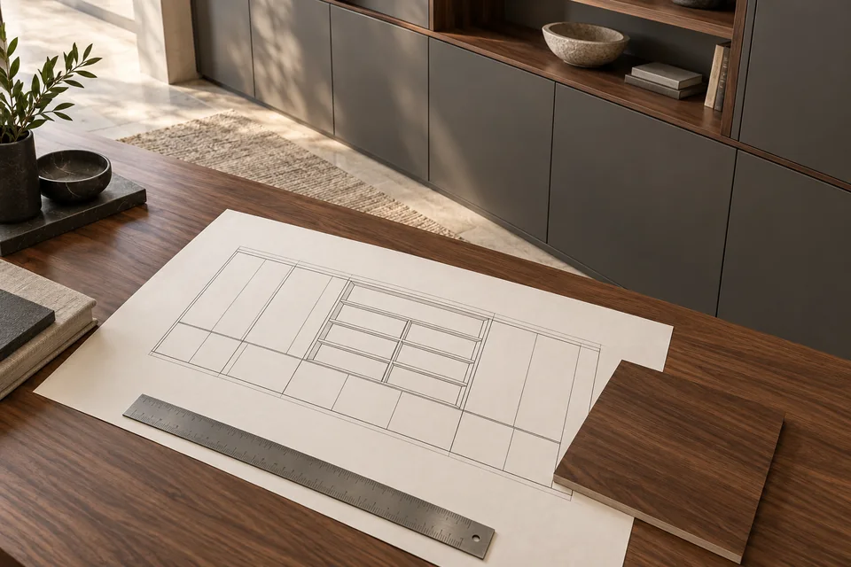
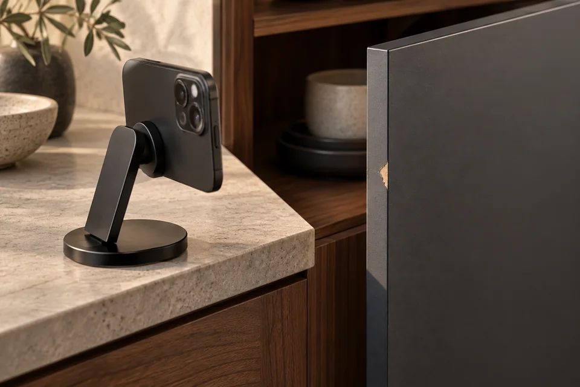
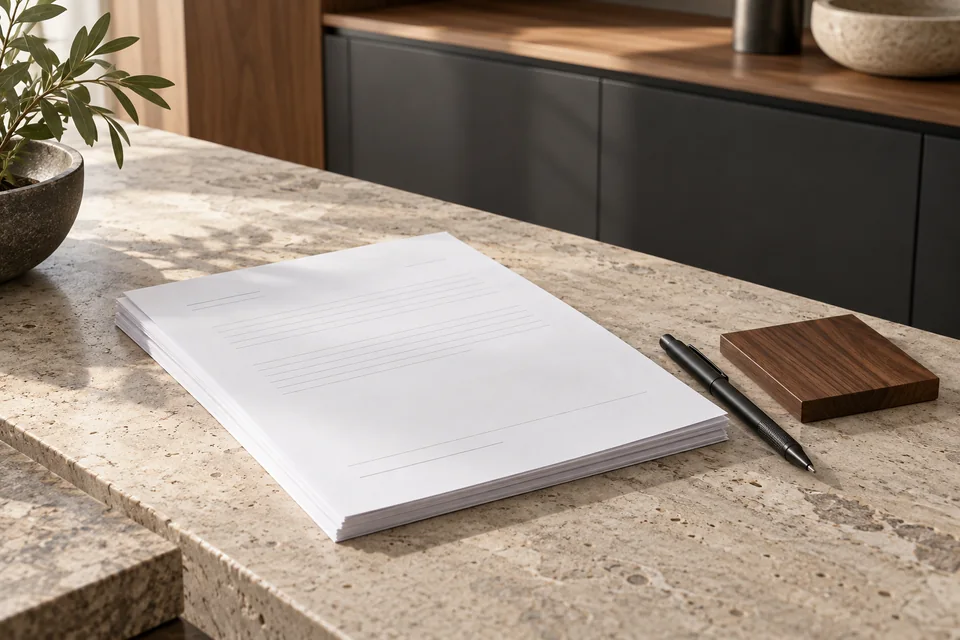

Важна работа деталей
Зазоры фасадов, крепления, кромки и механизмы влияют на использование мебели каждый день. Внешнего впечатления недостаточно, чтобы оценить качество сборки.
Профессиональная проверка качества мебели, выявление недостатков и подготовка письменного заключения.

Если возникли сомнения в качестве мебели, важна не субъективная оценка, а профессиональный осмотр и документированное описание выявленных недостатков.
Экспертиза помогает разобраться с качеством изделия, особенностями изготовления и установки, а также подготовить материалы для дальнейшего разрешения спора.
Зазоры фасадов, крепления, кромки и механизмы влияют на использование мебели каждый день. Внешнего впечатления недостаточно, чтобы оценить качество сборки.
Одинаково заметные повреждения могут иметь разные причины. Осмотр и документы помогают оценить обстоятельства, а не делать вывод по одному внешнему признаку.
Описание, фотографии и результаты проверки позволяют предметно обсудить выявленные недостатки и дальнейшие действия.
Возникли вопросы о размерах, комплектации, отделке или соответствии мебели согласованному проекту.
Обнаружены повреждения, неровности, перекосы фасадов или проблемы с открыванием и закрыванием.
Есть разногласия с продавцом, производителем или исполнителем и требуется документированная оценка.
Состав проверки согласуем с учётом изделия, ваших вопросов и доступных документов.

Геометрия деталей, стыки, соединения и обработка. Фиксация обнаруженных отклонений и недостатков.

Состояние поверхностей, облицовки, фасадов и кромок: повреждения, отслоения и особенности отделки.

Положение секций и фасадов, доступные крепления, работа петель, направляющих и других механизмов.

Сопоставление фактических размеров, комплектации и характеристик с договором, спецификацией и проектом.

Описание и фотофиксация выявленных недостатков, их расположения и обстоятельств осмотра.

Ответы на согласованные вопросы по результатам осмотра и изучения предоставленных материалов.

По итогам работы клиент получает официальное письменное заключение с описанием проведённой проверки и выводами специалиста.
Возможность использования заключения при предъявлении претензий или в судебном процессе зависит от обстоятельств дела, требований к доказательствам и квалификации специалиста.
Вы описываете ситуацию и вопросы, на которые необходим ответ.
Изучаем договор, заказ, спецификацию, переписку и другие доступные материалы.
Проводим обследование мебели с фиксацией существенных обстоятельств.
Оформляем письменный документ с результатами проверки и выводами.
Фотографии общего вида мебели и проблемных участков, договор, спецификацию, проект и переписку по заказу — если они есть. Кратко опишите, когда вы заметили недостатки и что вызывает вопросы.
Фото помогают предварительно разобраться в ситуации и согласовать задачу. Формат проверки и необходимость осмотра определяются отдельно: по снимку нельзя достоверно оценить все соединения и работу механизмов.
Они зависят от объёма мебели, характера вопросов и состава проверки. Согласуем порядок работы, стоимость и сроки после знакомства с вашей ситуацией.
Расскажите, какая мебель вызывает вопросы, и опишите ситуацию. Согласуем предмет проверки, порядок работы и стоимость.
8 800 201-77-67Опишите ситуацию — подготовим обращение по экспертизе.